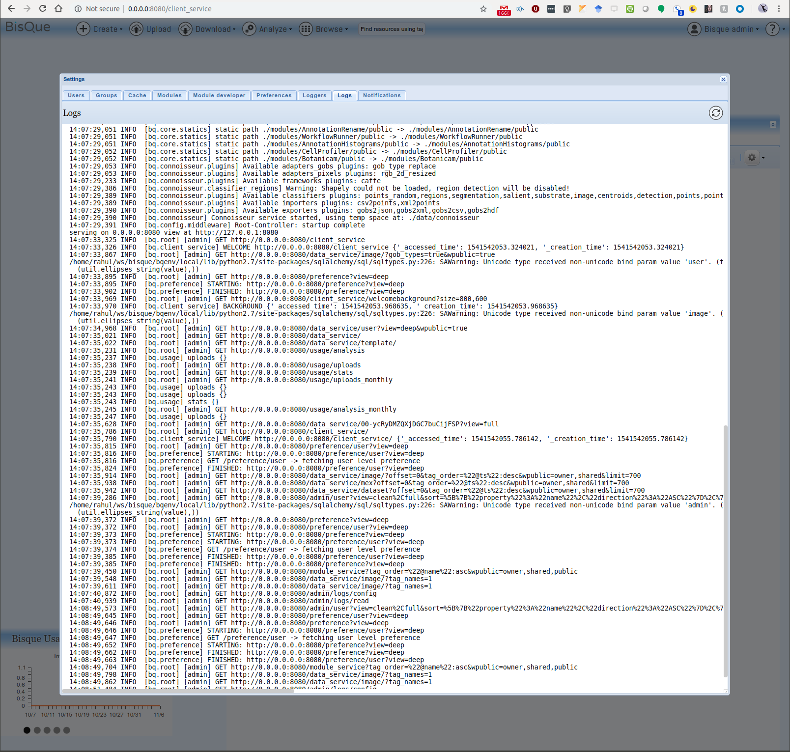
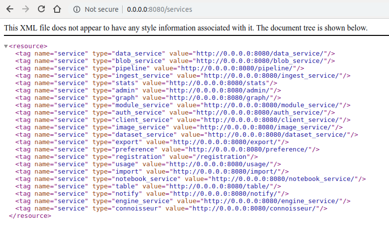
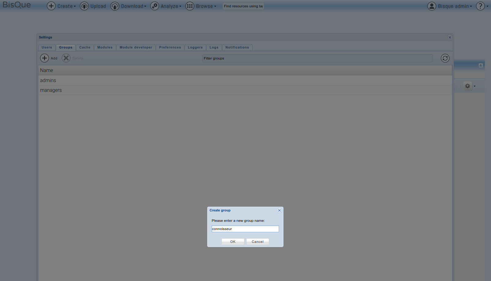
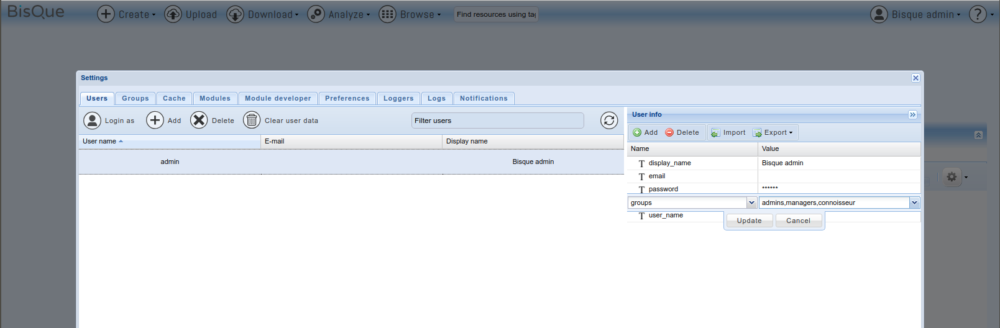
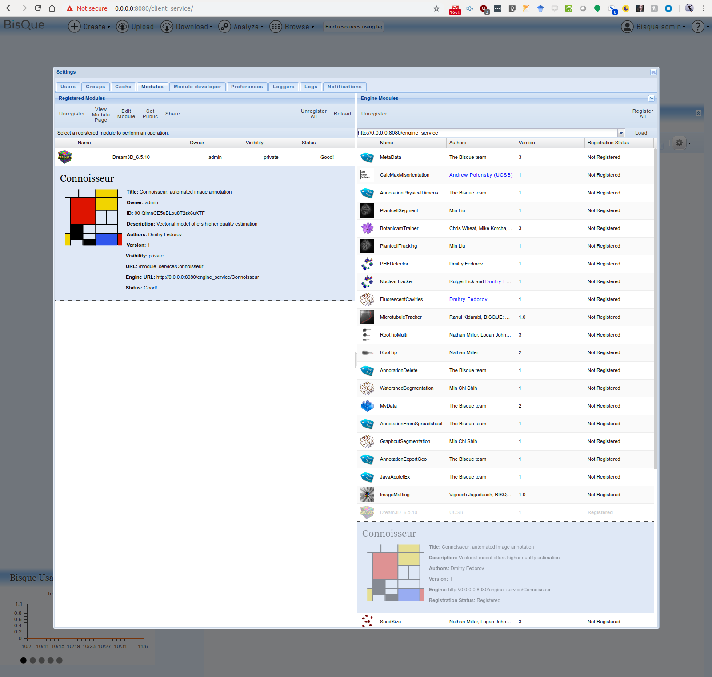
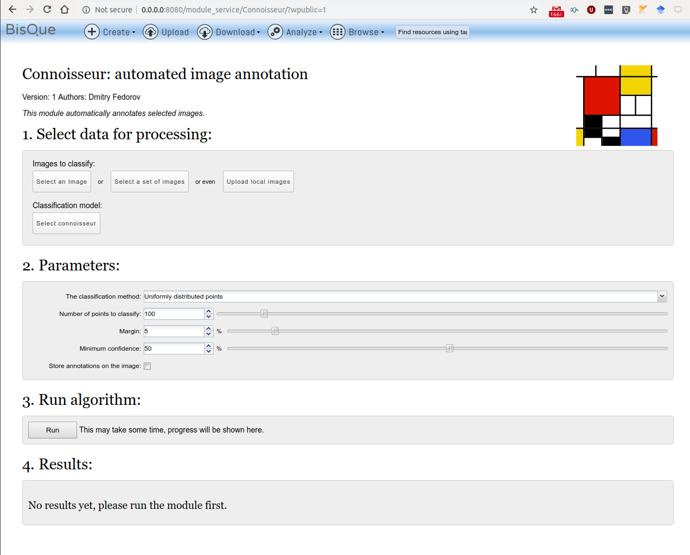

Setup Connoisseur¶
Information¶
- Connoisseur is the DL module for distributed compute.
- Condor is running on each node
TODO¶
- Figure out the configurations !!!
1. OpenCV 3.4.1¶
Installation Guide: Link 1
# Verify your installation pkg-config --libs opencv
2. CUDA 8.0 and cuDNN v7.1.4¶
Installation Guide: Link1, Link2
$ nvcc --version nvcc: NVIDIA (R) Cuda compiler driver Copyright (c) 2005-2016 NVIDIA Corporation Built on Sun_Sep__4_22:14:01_CDT_2016 Cuda compilation tools, release 8.0, V8.0.44
cuDNN v7.1.4 Runtime Library for Ubuntu16.04 (Deb) cuDNN v7.1.4 Developer Library for Ubuntu16.04 (Deb)
3. CAFFE¶
Setup caffe 1.0 using the official guide
- Installation Overview
mkdir build cd build cmake .. make all make install make runtest
$ caffe --version
caffe version 1.0.0
- Make sure you configure the path env in ~/.bashrc
export PATH=$PATH:/usr/local/cuda/bin:~/cv/caffe/build/tools export LD_LIBRARY_PATH=$LD_LIBRARY_PATH:/usr/local/cuda/lib export LD_LIBRARY_PATH=$LD_LIBRARY_PATH:/usr/local/cuda/lib64 export LD_LIBRARY_PATH=$LD_LIBRARY_PATH:/usr/local/cuda/extras/CUPTI/lib64 export LD_LIBRARY_PATH=$LD_LIBRARY_PATH:~/cv/caffe/.build_release/lib export PYTHONPATH=$PYTHONPATH:~/cv/caffe/python/:~/cv/caffe/.build_release/lib
- Also add the following in ~/[python_env_folder]/bin/activate script after the PATH variable setup
export PYTHONPATH=$PYTHONPATH:~/cv/caffe/python/
Test it all out to ensure caffe and opencv are functional
(bqenv) rahul@bqdev:~/ws/bisque$ python Python 2.7.12 (default, Dec 4 2017, 14:50:18) [GCC 5.4.0 20160609] on linux2 >>> import cv2 >>> import caffe >>>
Also, ensure Caffe runs on the system
$ caffe --version caffe version 1.0.0
4. Install Connoisseur¶
Pre-requisite: (caffe and opencv may be the cause)
source ~/bisque/bqenv/bin/activate pip install lmdb pyvoro
Installation
- In Bisque top directory unzip the contents of module/connoisseur.zip
- Activate Env
source ~/bisque/bqenv/bin/activate - Ensure that caffe and opencv is importable in python
- Install connoisseur
cd ~/bisque/connoisseur && pip install -e connoisseur - Move the module to Bisque modules
mv ~/bisque/connoisseur/modules/Connoisseur/ ~/bisque/modules/ - Deactivate Env
source ~/bisque/bqenv/bin/deactivate - Re/Start the Bisque server
$ paver setup && bq-admin setup $ bq-admin server start $ bq-admin server stop - Make sure the service is available at http://0.0.0.0:8080/services
- Verify the log in module manager has no errors 
- Thereafter look for the loaded services at the URL http://0.0.0.0:8080/services  Look for the service named connoisseur in this list
5. Load Connoisseur¶
Now lets add the connoisseur user group for loading the module
- Create a connoisseur group 
- Add this group to the user/admin 
- Restart the services
$ bq-admin server start && bq-admin server stop - Load the module as user/admin 
- Open the module from navbar using Analyze->Classification->Connoisseur 
TODO: Configuration, load model and run a test on Connoisseur